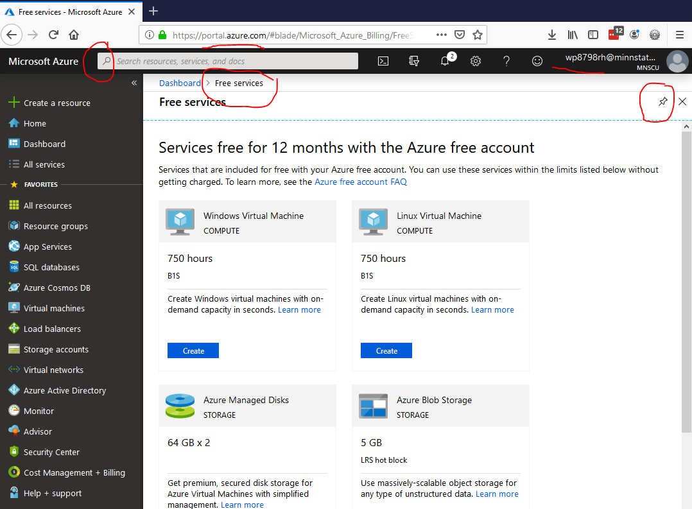

These exercises introduce concepts used to define how organizations procure hardware for information systems.
After completing this module you will be able to:
The goal of this assignment is to familiarize you with how organizations use the latest available hardware, and energy considerations, in order to efficiently and effectively get things done. You are expected to develop a working knowledge of the following tasks. If you are having trouble there are several resources available, besides a Google Search You can also ask a teaching assistant or the instructor for assistance.
The components of a computer are similar, but the number of possible combinations, from small systems to massive data center, are almost limitless.
Organizations need to balance purchasing newer, more energy efficient computer hardware with purchase price (and other costs to be discussed in later chapters, such as software and training). Visit the PC Part Picker website, and use the System Builder to configure a desktop computer system for an organization for which you would like to work. As you choose the components, consider the tradeoffs in computing power, cost and performance that you are making.
After completing your build, answer the questions below. (50) 1. What was the total cost?
(50) 2. What was the wattage?
(50) 3. What decision(s) were the most difficult to make? (It is okay if your answer is different than your classmates-consider what was learned).
Consider the selection process. What type of factors, training or experience could benefit organizations that must continually consider purchasing new computer equipment? (50) 4. Briefly list some ways organizations can improve the computer systems purchasing process. Consider changing technology, training, determining employees needs, competition and other factors.
(50) 5. Use the Snipping Tool to make a screen of your System Builder results. Save the screenshot as "Ex1" in your ' ' folder. You will be combining screenshots from several exercises at the end of this assignment, just as you did in Formative00-PDF File Creation.
Investigate different types of computer systems. Then find a recent listing of the most powerful operational supercomputers. Hint: search for 'top 500 supercomputer'
Consider the purpose(s) of these devices.
(50) 6. What was the most unique or surprising supercomputer use that you encountered?
(50) 7. Use the Snipping Tool and make a screenshot of the supercomputing list. (from your research materials). Save the screenshot as "Ex2" in your ' ' folder. You will be combining screenshots from several exercises at the end of this assignment, just as you did in Formative00-PDF File Creation.
Investigate Server Farms, Data Centers and Green Computing. Log into the Microsoft Azure Portal. Folder with screenshots for first two Exercises Username: StarID@go.minnstate.edu Password: WSU network password
Username: StarID@go.minnstate.edu
Password: WSU network password
Become familiar with the interface. Note- the interface is updated regularly so it may look different than the following.  Azure Portal Then using the search bar at the top, find 'free services' and make sure to pin it to your dashboard for future reference. Under 'Always Free Services' investigate the creation of a 'Microsoft IoT Hub' or similar service by clicking 'Create'. Create a new or select an existing Resource Group. Choose an appropriate region for your Hub. Give your IoT Hub or service an appropriate name, such as Summative03, then click 'Review+Create' .
Reflect on this experience, and what you have found during your investigation. (50) 8. Briefly list a benefit of being able to create the services available on a platform such as Microsoft Azure or Amazon Web Services to an organization of interest to you.
(50) 9. Take a screenshot of the service you created. Note: do not worry if your deployment failed. Use the Snipping Tool to make a screenshot that includes the description and your StarID in the upper right of the Azure portal. Save the screenshot as "Ex3" in your ' ' folder. You will be combining screenshots from several exercises at the end of this assignment, just as you did in Formative00-PDF File Creation.
Note: do not worry if your deployment failed.
Use a web browser to verify that you have published your website to https://classes.winona.edu/... Check that your name, StarID, email, class, semester, section and all of your answers are correct and visible. From the menu choose File>Print... and using "Microsoft Print to PDF" save a copy of this assignment as a .pdf file in your ' ' folder.
(50) 10. Save your file 'WebPage.pdf' to the ' ' folder.
Create a .pdf file named 'screenshots.pdf' by combining the above screenshots.
Screenshots
Screenshots.pdf
Ctrl + V
(50) 11. Save your file 'ScreenShots.pdf' to the ' ' folder.
Use PDFill to merge the WebPage.pdf file with the ScreenShots.pdf file, and save it as 'Summative03.pdf' in ' ' folder.
(50) 12. Upload your file 'Summative03.pdf' to the D2L 'Summative03' Assignment folder.
Use a browser to view your completed and published website at: https://classes.winona.edu/... Ensure that you have linked this assignment on your home page. Note that your screenshots do not have to be completed to perform this step.